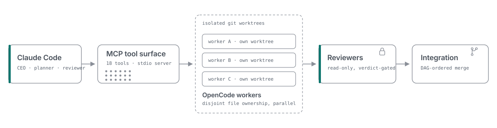
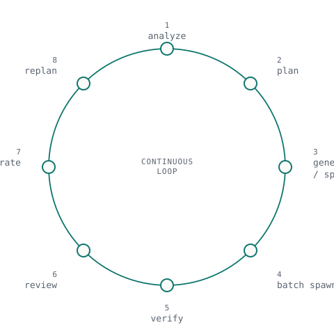

<title>Cohort Docs: Architecture, Loop, Tools and Configuration</title>
<meta charset="utf-8">
<meta name="viewport" content="width=device-width, initial-scale=1">
<meta name="description" content="Documentation for Cohort: the CEO/planner/reviewer model, the architecture, the plan-review-integrate loop, the 18 MCP tools, configuration, extensibility, and the $0 live run that proved the review gate has teeth.">
<meta name="color-scheme" content="light dark">
<link rel="icon" href="data:image/svg+xml,%3Csvg xmlns='http://www.w3.org/2000/svg' viewBox='0 0 48 40'%3E%3Ccircle cx='24' cy='32' r='5' fill='%230F766E'/%3E%3Cg fill='none' stroke='%23787774' stroke-width='1.6'%3E%3Cline x1='24' y1='32' x2='6' y2='16'/%3E%3Cline x1='24' y1='32' x2='15' y2='7'/%3E%3Cline x1='24' y1='32' x2='24' y2='4'/%3E%3Cline x1='24' y1='32' x2='33' y2='7'/%3E%3Cline x1='24' y1='32' x2='42' y2='16'/%3E%3C/g%3E%3Cg fill='%23FBFBFA' stroke='%23787774' stroke-width='1.6'%3E%3Ccircle cx='6' cy='16' r='3'/%3E%3Ccircle cx='15' cy='7' r='3'/%3E%3Ccircle cx='24' cy='4' r='3'/%3E%3Ccircle cx='33' cy='7' r='3'/%3E%3Ccircle cx='42' cy='16' r='3'/%3E%3C/g%3E%3C/svg%3E">
<style>
  :root {
    --canvas: #FBFBFA;
    --surface: #F7F6F3;
    --heading: #1A1A1A;
    --body: #2F3437;
    --muted: #747371;
    --border: #EAEAEA;
    --accent: #0F766E;
    --accent-tint: #EEF6F5;
    --cta-bg: #111111;
    --cta-text: #FFFFFF;
    --radius-card: 10px;
    --radius-btn: 6px;
    --font-display: "Geist", "SF Pro Display", "Helvetica Neue", system-ui, sans-serif;
    --font-mono: "Geist Mono", "JetBrains Mono", "SF Mono", ui-monospace, monospace;
    color-scheme: light;
  }

  @media (prefers-color-scheme: dark) {
    :root {
      --canvas: #0C0D0E;
      --surface: #141618;
      --heading: #ECECEC;
      --body: #D4D6D8;
      --muted: #B8BCC0;
      --border: rgba(255, 255, 255, 0.08);
      --accent: #2DD4BF;
      --accent-tint: rgba(45, 212, 191, 0.08);
      --cta-bg: #FAFAFA;
      --cta-text: #111111;
      color-scheme: dark;
    }
  }

  :root[data-theme="dark"] {
    --canvas: #0C0D0E;
    --surface: #141618;
    --heading: #ECECEC;
    --body: #D4D6D8;
    --muted: #B8BCC0;
    --border: rgba(255, 255, 255, 0.08);
    --accent: #2DD4BF;
    --accent-tint: rgba(45, 212, 191, 0.08);
    --cta-bg: #FAFAFA;
    --cta-text: #111111;
    color-scheme: dark;
  }

  :root[data-theme="light"] {
    --canvas: #FBFBFA;
    --surface: #F7F6F3;
    --heading: #1A1A1A;
    --body: #2F3437;
    --muted: #747371;
    --border: #EAEAEA;
    --accent: #0F766E;
    --accent-tint: #EEF6F5;
    --cta-bg: #111111;
    --cta-text: #FFFFFF;
    color-scheme: light;
  }

  * { box-sizing: border-box; }

  html { scroll-behavior: smooth; }

  body {
    margin: 0;
    background: var(--canvas);
    color: var(--body);
    font-family: var(--font-display);
    line-height: 1.6;
    -webkit-font-smoothing: antialiased;
    overflow-x: hidden;
  }

  a { color: inherit; }

  .container {
    max-width: 1120px;
    margin: 0 auto;
    padding-inline: 24px;
  }

  /* ---------- nav ---------- */

  .nav {
    position: sticky;
    top: 0;
    z-index: 20;
    height: 72px;
    display: flex;
    align-items: center;
    background: color-mix(in srgb, var(--canvas) 88%, transparent);
    backdrop-filter: blur(8px);
    -webkit-backdrop-filter: blur(8px);
    border-bottom: 1px solid var(--border);
  }

  .nav-inner {
    width: 100%;
    display: flex;
    align-items: center;
    justify-content: space-between;
    gap: 16px;
  }

  .wordmark {
    display: flex;
    align-items: center;
    gap: 10px;
    text-decoration: none;
    color: var(--heading);
    font-weight: 600;
    font-size: 1.05rem;
    letter-spacing: -0.02em;
  }

  .wordmark svg { display: block; }

  .nav-links {
    display: flex;
    align-items: center;
    gap: 24px;
  }

  .nav-links a {
    text-decoration: none;
    color: var(--body);
    font-size: 0.9rem;
    font-family: var(--font-mono);
  }

  .nav-links a:hover { color: var(--accent); }
  .nav-links a[aria-current="page"] { color: var(--accent); }

  .theme-toggle {
    display: inline-flex;
    align-items: center;
    justify-content: center;
    width: 32px;
    height: 32px;
    padding: 0;
    border: 1px solid var(--border);
    border-radius: var(--radius-btn);
    background: transparent;
    color: var(--body);
    cursor: pointer;
  }

  .theme-toggle:hover { border-color: var(--accent); color: var(--accent); }

  .theme-toggle .icon-moon { display: none; }
  :root[data-theme="dark"] .theme-toggle .icon-sun { display: none; }
  :root[data-theme="dark"] .theme-toggle .icon-moon { display: block; }

  @media (prefers-color-scheme: dark) {
    .theme-toggle .icon-sun { display: none; }
    .theme-toggle .icon-moon { display: block; }
    :root[data-theme="light"] .theme-toggle .icon-sun { display: block; }
    :root[data-theme="light"] .theme-toggle .icon-moon { display: none; }
  }

  /* ---------- reveal motion ---------- */

  [data-reveal] {
    opacity: 0;
    transform: translateY(12px);
    transition: opacity 0.6s cubic-bezier(0.16, 1, 0.3, 1), transform 0.6s cubic-bezier(0.16, 1, 0.3, 1);
    transition-delay: calc(var(--d, 0) * 70ms);
  }

  [data-reveal].is-visible { opacity: 1; transform: none; }

  @media (prefers-reduced-motion: reduce) {
    [data-reveal] { transition: none; opacity: 1; transform: none; }
  }

  /* ---------- section shell ---------- */

  section { padding-block: 96px; border-top: 1px solid var(--border); }
  section[id] { scroll-margin-top: 88px; }

  .section-head { max-width: 56ch; margin-bottom: 48px; }

  .section-head h2 {
    margin: 0 0 12px;
    font-size: clamp(1.6rem, 3vw, 2.25rem);
    letter-spacing: -0.02em;
    color: var(--heading);
    font-weight: 600;
  }

  .section-head p { margin: 0; color: var(--muted); font-size: 1rem; }

  /* ---------- docs hero ---------- */

  .docs-hero { padding-block: 56px 44px; }

  .docs-hero h1 {
    margin: 0;
    font-size: clamp(2.1rem, 4.2vw, 3rem);
    line-height: 1.08;
    letter-spacing: -0.02em;
    font-weight: 600;
    color: var(--heading);
  }

  .docs-intro {
    margin: 18px 0 32px;
    max-width: 62ch;
    font-size: clamp(1rem, 1.4vw, 1.1rem);
    color: var(--body);
  }

  .toc {
    display: flex;
    flex-wrap: wrap;
    gap: 10px 22px;
    margin-top: 28px;
    padding-top: 24px;
    border-top: 1px solid var(--border);
  }

  .toc a {
    text-decoration: none;
    color: var(--muted);
    font-family: var(--font-mono);
    font-size: 0.85rem;
  }

  .toc a::before { content: "#"; margin-right: 4px; color: var(--border); }
  .toc a:hover { color: var(--accent); }

  /* ---------- docs body copy ---------- */

  .docs-body p { margin: 0 0 16px; color: var(--body); max-width: 68ch; }
  .docs-body p:last-child { margin-bottom: 0; }
  .docs-body code, .grid-3 code, .callout code {
    font-family: var(--font-mono);
    font-size: 0.9em;
    background: var(--surface);
    border: 1px solid var(--border);
    border-radius: 4px;
    padding: 1px 5px;
  }

  /* ---------- 3-up card grid (principles, config files, extension points) ---------- */

  .grid-3 {
    display: grid;
    grid-template-columns: repeat(3, 1fr);
    gap: 1px;
    background: var(--border);
    border: 1px solid var(--border);
    border-radius: var(--radius-card);
    overflow: hidden;
  }

  .grid-3 .card {
    background: var(--canvas);
    padding: 28px;
    display: flex;
    flex-direction: column;
    gap: 10px;
  }

  .grid-3 .card h3 { margin: 0; font-size: 1.02rem; color: var(--heading); font-weight: 600; }
  .grid-3 .card p { margin: 0; color: var(--muted); font-size: 0.92rem; }

  /* ---------- capabilities-style bento (tool surface) ---------- */

  .bento {
    display: grid;
    grid-template-columns: repeat(4, 1fr);
    gap: 1px;
    background: var(--border);
    border: 1px solid var(--border);
    border-radius: var(--radius-card);
    overflow: hidden;
  }

  .bento .card {
    background: var(--canvas);
    padding: 28px;
    display: flex;
    flex-direction: column;
    gap: 10px;
  }

  .bento .card.wide { grid-column: span 4; }

  .bento .card h3 { margin: 0; font-size: 1.05rem; color: var(--heading); font-weight: 600; }
  .bento .card p { margin: 0; color: var(--muted); font-size: 0.95rem; }

  .tool-group-chips, .module-tags {
    display: flex;
    flex-wrap: wrap;
    gap: 8px;
    margin-top: 4px;
  }

  .tool-chip {
    font-family: var(--font-mono);
    font-size: 0.8rem;
    color: var(--body);
    border: 1px solid var(--border);
    border-radius: var(--radius-btn);
    padding: 5px 10px;
  }

  /* ---------- diagram frames (external SVGs are OS-theme-locked, not toggle-aware) ---------- */

  .diagram-frame {
    background: #F7F6F3;
    border: 1px solid #EAEAEA;
    border-radius: var(--radius-card);
    padding: 28px;
    margin-bottom: 32px;
  }

  @media (prefers-color-scheme: dark) {
    .diagram-frame {
      background: #141618;
      border-color: rgba(255, 255, 255, 0.08);
    }
  }

  .diagram-frame img { display: block; width: 100%; height: auto; }
  .diagram-frame.loop-diagram img { max-width: 340px; margin: 0 auto; }

  /* ---------- loop steps (8-step variant of the loop grid) ---------- */

  .loop-row {
    display: grid;
    grid-template-columns: repeat(4, 1fr);
    gap: 1px;
    background: var(--border);
    border: 1px solid var(--border);
    border-radius: var(--radius-card);
    overflow: hidden;
    margin-bottom: 28px;
  }

  .loop-node {
    background: var(--canvas);
    padding: 24px 18px;
    display: flex;
    flex-direction: column;
    gap: 10px;
  }

  .loop-idx {
    display: inline-flex;
    align-items: center;
    justify-content: center;
    width: 28px;
    height: 28px;
    font-family: var(--font-mono);
    font-size: 0.75rem;
    color: var(--accent);
    border: 1px solid var(--border);
    border-radius: var(--radius-btn);
  }

  .loop-node h3 { margin: 4px 0 0; font-size: 0.95rem; color: var(--heading); font-weight: 600; }
  .loop-node p { margin: 0; color: var(--muted); font-size: 0.84rem; line-height: 1.55; }

  .loop-return {
    display: flex;
    align-items: center;
    justify-content: center;
    gap: 8px;
    margin: 0;
    color: var(--muted);
    font-family: var(--font-mono);
    font-size: 0.85rem;
    text-align: center;
  }

  .loop-return svg { flex-shrink: 0; color: var(--accent); }

  /* ---------- callout ---------- */

  .callout {
    background: var(--accent-tint);
    border: 1px solid var(--border);
    border-radius: var(--radius-card);
    padding: 24px 28px;
    margin-top: 28px;
  }

  .callout p { margin: 0; color: var(--body); font-size: 0.95rem; }
  .callout strong { color: var(--heading); }

  /* ---------- doc links ---------- */

  .doc-link {
    display: inline-flex;
    align-items: center;
    gap: 6px;
    margin-top: 24px;
    text-decoration: none;
    color: var(--accent);
    font-family: var(--font-mono);
    font-size: 0.9rem;
    border-bottom: 1px solid transparent;
  }

  .doc-link:hover { border-color: var(--accent); }

  /* ---------- stat panel (proof run) ---------- */

  .stat-panel {
    display: grid;
    grid-template-columns: repeat(2, 1fr);
    gap: 1px;
    background: var(--border);
    border: 1px solid var(--border);
    border-radius: var(--radius-card);
    overflow: hidden;
    margin-top: 28px;
  }

  .stat-tile {
    background: var(--canvas);
    padding: 20px;
    display: flex;
    flex-direction: column;
    gap: 6px;
  }

  .stat-tile.accent { background: var(--accent-tint); }

  .stat-tile .num {
    font-family: var(--font-mono);
    font-size: 1.35rem;
    color: var(--heading);
    letter-spacing: -0.01em;
  }

  .stat-tile.accent .num { color: var(--accent); }
  .stat-tile .lbl { font-size: 0.78rem; color: var(--muted); }

  /* ---------- terminal / code ---------- */

  .terminal {
    max-width: 720px;
    border: 1px solid var(--border);
    border-radius: var(--radius-card);
    overflow: hidden;
    background: var(--surface);
  }

  .terminal-bar {
    display: flex;
    align-items: center;
    gap: 7px;
    padding: 12px 16px;
    border-bottom: 1px solid var(--border);
  }

  .terminal-bar span {
    width: 9px;
    height: 9px;
    border-radius: 999px;
    display: inline-block;
  }

  .terminal-bar span:nth-child(1) { background: #E3A9A6; }
  .terminal-bar span:nth-child(2) { background: #E8CE9B; }
  .terminal-bar span:nth-child(3) { background: #A6C9AF; }

  @media (prefers-color-scheme: dark) {
    .terminal-bar span:nth-child(1) { background: #6B4B49; }
    .terminal-bar span:nth-child(2) { background: #6B5E42; }
    .terminal-bar span:nth-child(3) { background: #43584A; }
  }

  .config-file-label {
    margin: 0;
    font-family: var(--font-mono);
    font-size: 0.78rem;
    color: var(--muted);
    padding: 10px 20px 0;
  }

  .terminal-body { padding: 22px 24px; font-family: var(--font-mono); font-size: 0.9rem; }

  .terminal-line { display: flex; gap: 10px; padding-block: 5px; color: var(--body); }
  .terminal-line .prompt { color: var(--muted); user-select: none; }
  .terminal-line .cmd { color: var(--heading); }

  .terminal-body pre {
    margin: 0;
    font-family: var(--font-mono);
    font-size: 0.85rem;
    color: var(--body);
    white-space: pre;
    overflow-x: auto;
    line-height: 1.65;
  }

  /* ---------- footer ---------- */

  footer {
    border-top: 1px solid var(--border);
    padding-block: 40px;
  }

  .footer-inner {
    display: flex;
    flex-wrap: wrap;
    justify-content: space-between;
    align-items: center;
    gap: 16px;
  }

  .footer-inner p {
    margin: 0;
    color: var(--muted);
    font-size: 0.85rem;
  }

  .footer-links { display: flex; flex-wrap: wrap; align-items: center; gap: 20px; }
  .footer-links a { text-decoration: none; color: var(--muted); font-size: 0.85rem; font-family: var(--font-mono); }
  .footer-links a:hover { color: var(--accent); }
  .built-with { color: var(--muted); font-family: var(--font-mono); font-size: 0.85rem; }

  /* ---------- responsive ---------- */

  @media (max-width: 768px) {
    .container { padding-inline: 20px; }
    .nav-links { gap: 14px; }
    section { padding-block: 60px; }
    .grid-3 { grid-template-columns: 1fr; }
    .bento { grid-template-columns: 1fr; }
    .bento .card.wide { grid-column: span 1; }
    .loop-row { grid-template-columns: 1fr; }
    .stat-panel { grid-template-columns: 1fr; }
    .diagram-frame { padding: 18px; }
  }

  @media (max-width: 480px) {
    .nav-links { gap: 10px; }
    .nav-links a { font-size: 0.8rem; }
  }
</style>

<svg width="0" height="0" style="position:absolute" aria-hidden="true">
  <defs>
    <symbol id="cohort-mark" viewBox="0 0 48 40">
      <g fill="none" stroke="currentColor" stroke-width="1.6">
        <line x1="24" y1="32" x2="6" y2="16"></line>
        <line x1="24" y1="32" x2="15" y2="7"></line>
        <line x1="24" y1="32" x2="24" y2="4"></line>
        <line x1="24" y1="32" x2="33" y2="7"></line>
        <line x1="24" y1="32" x2="42" y2="16"></line>
      </g>
      <g fill="var(--canvas)" stroke="currentColor" stroke-width="1.6">
        <circle cx="6" cy="16" r="3"></circle>
        <circle cx="15" cy="7" r="3"></circle>
        <circle cx="24" cy="4" r="3"></circle>
        <circle cx="33" cy="7" r="3"></circle>
        <circle cx="42" cy="16" r="3"></circle>
      </g>
      <circle cx="24" cy="32" r="5.5" fill="var(--accent)"></circle>
    </symbol>
  </defs>
</svg>

<nav class="nav">
  <div class="nav-inner container">
    <a class="wordmark" href="index.html" aria-label="Cohort home">
      <svg width="26" height="22"><use href="#cohort-mark"></use></svg>
      <span>cohort</span>
    </a>
    <div class="nav-links">
      <a href="index.html">Home</a>
      <a href="docs.html" aria-current="page">Docs</a>
      <a href="https://github.com/Bhavya-Dhoot/Cohort">GitHub</a>
      <a href="https://www.npmjs.com/package/@bhavya-dhoot/cohort">npm</a>
      <button class="theme-toggle" id="theme-toggle" aria-label="Toggle color theme" aria-pressed="false">
        <svg class="icon-sun" width="16" height="16" viewBox="0 0 16 16" fill="none" stroke="currentColor" stroke-width="1.4">
          <circle cx="8" cy="8" r="3"></circle>
          <path d="M8 0.5v2M8 13.5v2M15.5 8h-2M2.5 8h-2M13.4 2.6l-1.4 1.4M4 12l-1.4 1.4M13.4 13.4L12 12M4 4 2.6 2.6"></path>
        </svg>
        <svg class="icon-moon" width="16" height="16" viewBox="0 0 16 16" fill="none" stroke="currentColor" stroke-width="1.4">
          <path d="M13.5 9.5A6 6 0 0 1 6.5 2.5 6 6 0 1 0 13.5 9.5Z"></path>
        </svg>
      </button>
    </div>
  </div>
</nav>

<main id="top">
  <header class="docs-hero container">
    <h1>Documentation</h1>
    <p class="docs-intro">How Cohort turns one objective into a reviewed, merged diff: the org model, the architecture, the loop, the full tool surface, configuration, and how to extend it without touching core.</p>
    <div class="terminal">
      <div class="terminal-bar"><span></span><span></span><span></span></div>
      <div class="terminal-body">
        <div class="terminal-line"><span class="prompt">$</span><span class="cmd">npm i -g @bhavya-dhoot/cohort</span></div>
        <div class="terminal-line"><span class="prompt">$</span><span class="cmd">cohort login</span></div>
        <div class="terminal-line"><span class="prompt">$</span><span class="cmd">cohort init</span></div>
        <div class="terminal-line"><span class="prompt">$</span><span class="cmd">cohort run "Build a small Node utility library: a config loader, an input validator, and a health-check handler."</span></div>
      </div>
    </div>
    <nav class="toc" aria-label="On this page">
      <a href="#overview">Overview</a>
      <a href="#architecture">Architecture</a>
      <a href="#loop">The loop</a>
      <a href="#tools">Tool surface</a>
      <a href="#configuration">Configuration</a>
      <a href="#extensibility">Extensibility</a>
      <a href="#proof">The proof run</a>
    </nav>
  </header>

  <section id="overview" class="container">
    <div class="section-head" data-reveal style="--d:0">
      <h2>Overview</h2>
      <p>What Cohort is, and why judgment stays with Claude Code while everything else is mechanics.</p>
    </div>
    <div class="docs-body" data-reveal style="--d:1">
      <p>Cohort turns one objective into a completed, reviewed diff. Claude Code plays CEO, planner, and reviewer for the run: it analyzes the objective, designs the org and the task graph, and reviews the work that comes back. It never writes implementation code itself.</p>
      <p>OpenCode workers are the implementation layer. Each one runs as a short-lived agent in its own isolated git worktree, holding a disjoint set of files, verified independently before its work is ever trusted.</p>
      <p>The org hierarchy a run implies, CEO to engineering manager to domain leads to specialists to reviewers to integration, is generated per objective as a plan artifact, not a set of always-on manager processes. Cohort keeps exactly one live lead: Claude Code itself. Domain leads and reviewers materialize as scoped subagents only when a phase needs one.</p>
      <p>Underneath, the platform is deterministic mechanics behind an 18-tool MCP surface: persistence, process control, verification, and budget guardrails. No hidden magic and no dynamic code execution, with disk-resident state that survives a crash.</p>
    </div>
    <div class="grid-3" data-reveal style="--d:2">
      <div class="card">
        <h3>Hierarchy is data</h3>
        <p>The org chart is a versioned plan artifact, inspected and approved by a human, not a standing process tree.</p>
      </div>
      <div class="card">
        <h3>Disk is source of truth</h3>
        <p>Worker state, events, and cost figures are written to disk before they're considered real. A crash rebuilds from disk, never from memory.</p>
      </div>
      <div class="card">
        <h3>Verification never trusts self-report</h3>
        <p>A worker's own completion message is a hint, never proof. Only independent verification against the real worktree diff can mark it verified.</p>
      </div>
    </div>
  </section>

  <section id="architecture" class="container">
    <div class="section-head" data-reveal style="--d:0">
      <h2>Architecture</h2>
      <p>One objective flows through four layers: an orchestrator, a tool surface, isolated workers, and a review gate.</p>
    </div>
    <div class="diagram-frame" data-reveal style="--d:1">
      
    </div>
    <div class="docs-body" data-reveal style="--d:2">
      <p>Claude Code drives the 18-tool MCP surface directly: spawning workers, polling state, and running independent verification. Each OpenCode worker runs in its own git worktree, so parallel batches execute with zero file conflicts by construction. Passing diffs go to dedicated read-only reviewers, whose verdicts gate the merge to the run's integration branch.</p>
      <p>Behind that surface sit 16 core modules under <code>packages/core/src/</code>, each with a single responsibility: worktree lifecycle, the worker state machine, verification, budget guardrails, review-verdict storage, and more.</p>
    </div>
    <div class="module-tags" data-reveal style="--d:3">
      <span class="tool-chip">config</span>
      <span class="tool-chip">worktree</span>
      <span class="tool-chip">opencode-client</span>
      <span class="tool-chip">worker</span>
      <span class="tool-chip">events</span>
      <span class="tool-chip">tasks</span>
      <span class="tool-chip">budget</span>
      <span class="tool-chip">verify</span>
      <span class="tool-chip">checks</span>
      <span class="tool-chip">plan</span>
      <span class="tool-chip">memory</span>
      <span class="tool-chip">specialist</span>
      <span class="tool-chip">review</span>
      <span class="tool-chip">report</span>
      <span class="tool-chip">mcp</span>
    </div>
    <a class="doc-link" href="ARCHITECTURE.md" data-reveal style="--d:4">Read the full design
      <svg width="12" height="12" viewBox="0 0 12 12" fill="none" stroke="currentColor" stroke-width="1.4"><path d="M2.5 6h7M6.5 2.5 10 6l-3.5 3.5"></path></svg>
    </a>
  </section>

  <section id="loop" class="container">
    <div class="section-head" data-reveal style="--d:0">
      <h2>The loop</h2>
      <p>Every objective runs the same eight-step cycle until the task graph is done.</p>
    </div>
    <div class="diagram-frame loop-diagram" data-reveal style="--d:1">
      
    </div>
    <div class="loop-row" data-reveal style="--d:2">
      <div class="loop-node"><span class="loop-idx">01</span><h3>Analyze</h3><p>Turn the objective into a brief.</p></div>
      <div class="loop-node"><span class="loop-idx">02</span><h3>Plan</h3><p>Task DAG, contracts, and file-ownership partitions, gated by human plan approval.</p></div>
      <div class="loop-node"><span class="loop-idx">03</span><h3>Generate org / specialists</h3><p>Org chart and <code>.opencode/agent/*.md</code> specialists for this objective only.</p></div>
      <div class="loop-node"><span class="loop-idx">04</span><h3>Batch spawn</h3><p>DAG-ready, non-overlapping tasks dispatched as isolated workers.</p></div>
      <div class="loop-node"><span class="loop-idx">05</span><h3>Verify</h3><p>Independent verification against the real worktree diff, never self-report.</p></div>
      <div class="loop-node"><span class="loop-idx">06</span><h3>Review</h3><p>Org-assigned reviewers read the diff and record a verdict.</p></div>
      <div class="loop-node"><span class="loop-idx">07</span><h3>Integrate</h3><p>Passing work merges to the integration branch in DAG order, a full regression gate, then human pre-merge review.</p></div>
      <div class="loop-node"><span class="loop-idx">08</span><h3>Replan</h3><p>Blockers replan only the affected subtree, capped at two or three iterations.</p></div>
    </div>
    <p class="loop-return" data-reveal style="--d:3">
      <svg width="14" height="14" viewBox="0 0 14 14" fill="none" stroke="currentColor" stroke-width="1.3"><path d="M2 7a5 5 0 0 1 8.5-3.5M12 7a5 5 0 0 1-8.5 3.5"></path><path d="M10 2v2h-2M4 12v-2h2"></path></svg>
      Hitting the replan cap escalates to a human instead of looping forever.
    </p>
  </section>

  <section id="tools" class="container">
    <div class="section-head" data-reveal style="--d:0">
      <h2>The tool surface</h2>
      <p>18 MCP tools, grouped by what they drive. Judgment stays in Claude Code; every tool here is mechanics.</p>
    </div>
    <div class="bento" data-reveal style="--d:1">
      <div class="card wide">
        <h3>Worker lifecycle</h3>
        <p>Provision, monitor, and settle a single OpenCode worker.</p>
        <div class="tool-group-chips">
          <span class="tool-chip">spawn_worker</span>
          <span class="tool-chip">worker_status</span>
          <span class="tool-chip">list_workers</span>
          <span class="tool-chip">stream_worker_log</span>
          <span class="tool-chip">abort_worker</span>
          <span class="tool-chip">collect_worker</span>
          <span class="tool-chip">verify_worker</span>
          <span class="tool-chip">finalize_worker</span>
        </div>
      </div>
      <div class="card wide">
        <h3>Pipeline</h3>
        <p>Plan, batch, integrate, and replan across the whole task DAG.</p>
        <div class="tool-group-chips">
          <span class="tool-chip">plan_submit</span>
          <span class="tool-chip">next_batch</span>
          <span class="tool-chip">batch_status</span>
          <span class="tool-chip">integrate_batch</span>
          <span class="tool-chip">run_check_suite</span>
          <span class="tool-chip">replan_record</span>
        </div>
      </div>
      <div class="card">
        <h3>Memory</h3>
        <p><code>memory</code> reads, writes, appends, or bundles shared cross-run project memory.</p>
      </div>
      <div class="card">
        <h3>Specialist</h3>
        <p><code>specialist</code> generates, retires, or lists the <code>.opencode/agent/*.md</code> files a plan needs.</p>
      </div>
      <div class="card">
        <h3>Review verdict</h3>
        <p><code>review_verdict</code> records or reads a reviewer's verdict; a non-pass verdict requires findings.</p>
      </div>
      <div class="card">
        <h3>Run report</h3>
        <p><code>run_report</code> renders the run's markdown and mermaid observability report from on-disk artifacts.</p>
      </div>
    </div>
  </section>

  <section id="configuration" class="container">
    <div class="section-head" data-reveal style="--d:0">
      <h2>Configuration</h2>
      <p>Five shipped YAML files under <code>config/</code>, each overridable per project in <code>.cohort/config/</code>.</p>
    </div>
    <div class="grid-3" data-reveal style="--d:1">
      <div class="card">
        <h3>orchestrator.yaml</h3>
        <p>Budget caps, replan cap, human gates, worker concurrency and timeout.</p>
      </div>
      <div class="card">
        <h3>models.yaml</h3>
        <p>Task-type to provider/model routing, and the soft-cap downgrade target.</p>
      </div>
      <div class="card">
        <h3>agents.yaml</h3>
        <p>Specialist archetypes, the deny-floor default permission, max concurrent specialists.</p>
      </div>
      <div class="card">
        <h3>memory.yaml</h3>
        <p>Store, retention, and the per-handoff context token cap.</p>
      </div>
      <div class="card">
        <h3>providers.yaml</h3>
        <p>Provider definitions; only an env var name is stored, never a literal key.</p>
      </div>
    </div>
    <div class="docs-body" data-reveal style="--d:2">
      <p>A project overrides any of these under <code>.cohort/config/</code>. Objects deep-merge key by key over the shipped defaults; arrays and scalars replace outright.</p>
    </div>
    <div class="terminal" data-reveal style="--d:3">
      <div class="terminal-bar"><span></span><span></span><span></span></div>
      <p class="config-file-label">.cohort/config/models.yaml</p>
      <div class="terminal-body"><pre>routing:
  default: "anthropic/claude-sonnet"
  implementation: "opencode/grok-code"
  search: "anthropic/claude-haiku"
downgrade_on_soft_cap: "small_model"
small_model: "anthropic/claude-haiku"</pre></div>
    </div>
  </section>

  <section id="extensibility" class="container">
    <div class="section-head" data-reveal style="--d:0">
      <h2>Extensibility</h2>
      <p>Five extension points change platform behavior without touching <code>packages/core/src</code>.</p>
    </div>
    <div class="grid-3" data-reveal style="--d:1">
      <div class="card">
        <h3>Custom check suites</h3>
        <p><code>orchestrator.yaml</code>, key <code>checks.suites</code>, run by <code>run_check_suite</code>.</p>
      </div>
      <div class="card">
        <h3>Custom memory sections</h3>
        <p><code>memory.yaml</code>, key <code>sections</code>, read and written through the <code>memory</code> tool.</p>
      </div>
      <div class="card">
        <h3>Custom reviewers</h3>
        <p>A markdown agent file at <code>.opencode/agent/&lt;id&gt;.md</code>; <code>review_verdict</code> accepts any path-safe reviewer id.</p>
      </div>
      <div class="card">
        <h3>Alternate worker backends</h3>
        <p>Any client satisfying the <code>OpencodeClient</code> interface, injected via <code>createAgenticMcpServer({ deps })</code>.</p>
      </div>
      <div class="card">
        <h3>New providers</h3>
        <p><code>providers.yaml</code>, key <code>providers</code>; only the env var name is stored, never a literal key.</p>
      </div>
    </div>
    <div class="callout" data-reveal style="--d:2">
      <p><strong>Non-goal:</strong> no dynamic loading of arbitrary user JavaScript. No extension point evaluates a project-supplied script at runtime: config and markdown are auditable without executing them, and the backend interface is type-checked at the call site.</p>
    </div>
    <a class="doc-link" href="EXTENDING.md" data-reveal style="--d:3">Read the extension guide
      <svg width="12" height="12" viewBox="0 0 12 12" fill="none" stroke="currentColor" stroke-width="1.4"><path d="M2.5 6h7M6.5 2.5 10 6l-3.5 3.5"></path></svg>
    </a>
  </section>

  <section id="proof" class="container">
    <div class="section-head" data-reveal style="--d:0">
      <h2>The proof run</h2>
      <p>A real run, not a hermetic test: Claude as orchestrator, real MCP tools, real OpenCode workers, at $0.</p>
    </div>
    <div class="docs-body" data-reveal style="--d:1">
      <p>Given the objective "Build a small Node utility library: a config loader, an input validator, and a health-check handler," the orchestrator generated a CEO, an engineering manager, three domain leads, and three specialists, then spawned three OpenCode workers in parallel, each isolated in its own git worktree, each owning exactly one file.</p>
      <p>Three live reviewer subagents then read the real diffs and caught a genuine bug: two of the three modules came back as ESM in a CommonJS project, unloadable under <code>require()</code>. The reviewers blocked both and passed the one clean module. The gate held: the blocked work was replanned instead of force-merged, and <code>run_report</code> rendered the observability report below straight from the run's on-disk artifacts.</p>
    </div>
    <div class="stat-panel" data-reveal style="--d:2">
      <div class="stat-tile"><span class="num">3 / 1 / 0 / 2</span><span class="lbl">Tasks: total / done / failed / pending</span></div>
      <div class="stat-tile"><span class="num">6 / 2</span><span class="lbl">Reviews: total / blocking</span></div>
      <div class="stat-tile"><span class="num">8m 57s</span><span class="lbl">Duration</span></div>
      <div class="stat-tile accent"><span class="num">$0.0000</span><span class="lbl">Committed cost</span></div>
    </div>
    <a class="doc-link" href="DEMO-RUN.md" data-reveal style="--d:3">Read the full run
      <svg width="12" height="12" viewBox="0 0 12 12" fill="none" stroke="currentColor" stroke-width="1.4"><path d="M2.5 6h7M6.5 2.5 10 6l-3.5 3.5"></path></svg>
    </a>
  </section>
</main>

<footer class="container">
  <div class="footer-inner">
    <p>An autonomous AI software-engineering organization for Claude Code and OpenCode.</p>
    <div class="footer-links">
      <a href="https://github.com/Bhavya-Dhoot/Cohort">GitHub</a>
      <a href="https://www.npmjs.com/package/@bhavya-dhoot/cohort">npm</a>
      <a href="https://bhavya-dhoot.github.io/Cohort/">Pages</a>
      <a href="https://github.com/Bhavya-Dhoot/Cohort/blob/main/LICENSE">MIT License</a>
      <span class="built-with">Built with Claude Code + OpenCode</span>
    </div>
  </div>
</footer>

<script>
  (function () {
    var root = document.documentElement;
    var stored = null;
    try { stored = localStorage.getItem('cohort-theme'); } catch (e) {}
    if (stored === 'dark' || stored === 'light') root.setAttribute('data-theme', stored);

    var toggle = document.getElementById('theme-toggle');
    toggle.addEventListener('click', function () {
      var systemDark = window.matchMedia('(prefers-color-scheme: dark)').matches;
      var current = root.getAttribute('data-theme') || (systemDark ? 'dark' : 'light');
      var next = current === 'dark' ? 'light' : 'dark';
      root.setAttribute('data-theme', next);
      toggle.setAttribute('aria-pressed', String(next === 'dark'));
      try { localStorage.setItem('cohort-theme', next); } catch (e) {}
    });
  })();

  (function () {
    var reduceMotion = window.matchMedia('(prefers-reduced-motion: reduce)').matches;
    var items = document.querySelectorAll('[data-reveal]');
    if (reduceMotion || !('IntersectionObserver' in window)) {
      items.forEach(function (el) { el.classList.add('is-visible'); });
      return;
    }
    var io = new IntersectionObserver(function (entries) {
      entries.forEach(function (entry) {
        if (entry.isIntersecting) {
          entry.target.classList.add('is-visible');
          io.unobserve(entry.target);
        }
      });
    }, { threshold: 0.15 });
    items.forEach(function (el) { io.observe(el); });
  })();
</script>
